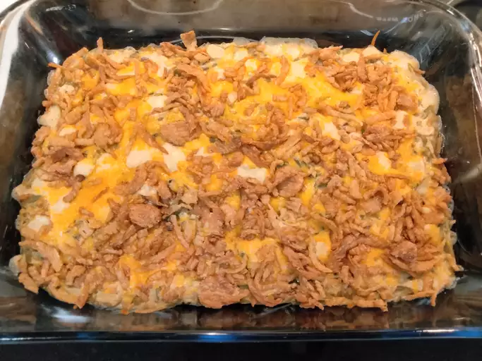

Green Bean Casserole

Description
This green bean casserole is truly the best. Made with just four budget-friendly ingredients, you'll come back to this green bean casserole recipe year after year.
Ingredients
- Green Beans
- Canned Soup
- Cheese
- French-Fried Onions
- Optional Ingredients: Crumbled bacon, sautéed mushrooms or onions, garlic, Parmesean cheese, black pepper
Steps
- Mix the beans and soup in a microwave-safe bowl and microwave until warm.
- Stir in half the cheese. Microwave until melted and well-blended.
- Transfer to a prepared baking dish. Top with fried onions and remaining cheese.
- Bake in the preheated oven until the cheese is melted and the onions are brown.